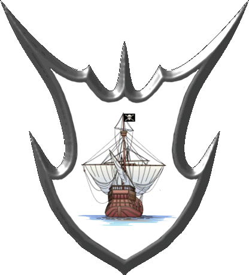

| Übersicht,
Allgemeines |
|
Spielerwappen gesucht!
|
| Amin Godas (RIP) |
hi leute.
ich bräuchte ein schönes spielerwappen. wie kommt man an ein solches heran? |
12.08.07 14:10

|
|
| Redlook Dose (RIP) |
Dir eins malen lassen oder im Internet suchen oder eines aus der Liste unter Stellung->Optionen->Wappen (relativ weit oben) aussuchen. |
12.08.07 19:29
|
|
| Robinson Crusoe (RIP) |
Mit "Im Internet suchen" wäre ich aber vorsichtig. Da gibts Urheberrechte von den Erstellern. Theoretisch brauchst du sogar erst eine schriftliche (!!) Zustimmung, dass du ihre Wappen hier benutzen darfst.
Einige hier machen auch Wappen für andere Spieler. Einfach mal mit der Suchfunktion probieren ;) |
12.08.07 19:42
|
|
| Falster von Distelflamme (RIP) |
Und der Ersteller kann dann ein Gericht finden bei dem er ein verfahren eröffnen kann das einen imaginären einzelnen urherberrechts übertretungs sachverhalt ohne materiellen schaden als hauptsache aufnimmt keule... |
12.08.07 20:54
|
|
| Biba Butzemann (RIP) |
rofl falli |
12.08.07 23:07
|
|
| Amin Godas (RIP) |
und wo habt ihr dann eute tollen wappen her?
falster, du zum bsp. |
12.08.07 23:22
|
|
| Falster von Distelflamme (RIP) |
hat tira lu gemacht |
12.08.07 23:32
|
|
| Nalon din Adun (RIP) |
Das Gericht zu finden wird sicherlich schwierig, einen Anwalt, der mal eben eine Abmahnung schreibt, wohl weniger.
Dazu kommt, dass einem niemand garantiert, dass der verwendete Link nicht plötzlich ein völlig anderes Bild zeigt ;) |
13.08.07 0:38
|
|
| Falster von Distelflamme (RIP) |
wenn einer dein wappen in ähnlicher gestaltung nutzen würde, dann würdest du also geld für einen anwalt ausgeben das der eine fragliche abmahnung schreibt obwohl er dir raten wird das zu lassen wenn er seriös ist da der angeschriebene wohl kaum seinen standartsatz übernehmen würde und erst ein prozess geführt werden müsste damit er bzw du diese mittel erstattet bekämen?
oder glaubst du eine auf aussergerichtliche einigungen spezialisierte kanzlei würde sich mit der streitsache "nalons wappen" befassen? |
13.08.07 1:24
|
|
| Bluemchen (RIP) |
naja, da das anwaltshonorar auch streitwertabhaengig ist............... :O) |
13.08.07 8:05
|
|
| Titania Greenleafxxx (RIP) |
Juristen sind komisch.. |
13.08.07 12:43
|
|
| Kage Hitomi (RIP) |
Aber berechenbar...
|
13.08.07 12:59
|
|
Sambi
 |
und es sind auch nur menschen. bist du ein wenig intelligent und beantwortest die fragen mit nich licht zu verstehenden und fraglichen antworten, kann es passieren das der Anwalt mal nicht weiter weiß und leicht verzweifelt*g* |
13.08.07 13:21
 |
|
Sambi
|
licht=leicht |
13.08.07 13:21
|
|
Isabella Cortez
 |
Berechenbar sind Anwälte vielleicht, aber Rechnen können sie nicht (iuris non calculat) |
13.08.07 13:37
|
|
MADshadowman von Tacheless
 |
was? ejakulat? |
13.08.07 16:14
|
|
| Falster von Distelflamme (RIP) |
allgemeiner rat meinerseits wenn gedichte, bilder, wappen, usw eigener feder und so durch andere hier missbräuchlich genutzt werden, sollte man nicht über urheberrecht oder abmahnungen nachdenken sondern im fall eines kompromisslosen gebahren des lausers nett und freundlich bei der sl um hilfe anfragen ich glaub die werden dann gern mal ein statement an den plagiator abgeben :) |
13.08.07 16:29
|
|
| Narndil Biunda v. Tacheless (RIP) |
als allererstes kann man ja auch, bevor man zur sl läuft, mal denjenigen welchen auf nette höfliche art ansprechen er möchte doch bitte so nett sein nicht das wappen/gedicht... klauen und als eigenes verwenden. das reicht im normalfall schon aus. da brauch man nicht die sl belästigen. ^^
*nochmal les was falster geschrieben hat* achso... *blubb* schreib doch deutsch dann versteht man das auch. ;)
naja hab ichs halt nochmal für die geschrieben die falli auch nicht beim 1. lesen verstehen. ^^ |
19.08.07 16:57
|
|
| Jolina (RIP) |
Ich hab falli verstanden *g*
Und Das jetzige Wappen von Amin Godas ist auch nicht frei von Copyright, so als Anmerkung zumal es nicht mal als heraldisches Wappen ansatzweise durchgeht, was wiederum dazu führt das es nichts mit den Vorgaben von der SL zu tun hat ^^
Spieler-Wappen
1. Transparenter Rand, Form und Stil ähnlich den vom Spiel vorgegebenen (z.B. 1-100)
2. Es ist nur gestattet, auf eigenen oder Webspace zu verlinken, bei dem dies dem Spieler ausdrücklich gestattet wurde.
3. Als Wappen kommen nur tatsächliche Wappen in Frage, also beispielsweise keine sonstigen Bilder, Personen u.ä.
4. Bei Mißbrauch kann eine generelle Sperre für individuelle Anpassungen oder andere Spielfunktionen erfolgen.
auch wenn sich nicht viele dran halten ;)
MfG |
29.08.07 13:21
|
|
Übersicht,
Allgemeines
|